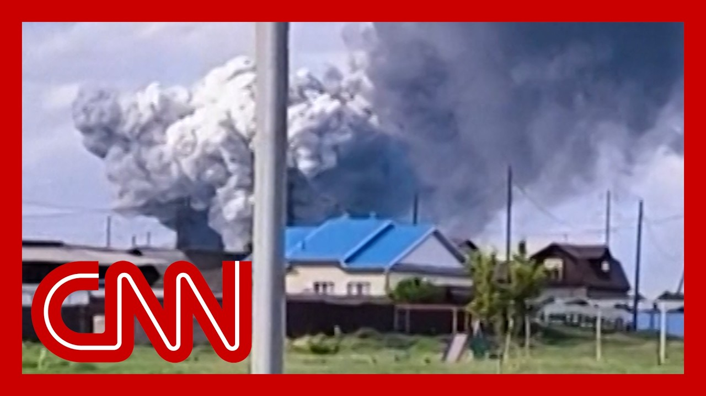

【“令人难以置信的巧妙”：退役上校谈乌克兰对俄罗斯轰炸机的无人机袭击】
Summary: Ukraine launched unprecedented drone attacks deep inside Russia, targeting air bases and destroying dozens of warplanes in Operation Spiderweb, while peace talks resumed in Turkey. The strikes, using smuggled drones hidden in trucks and mobile homes, severely damaged Russian military pride and strategic assets, including long-range bombers. President Zelensky highlighted the operation’s success as a morale boost and a push for diplomacy, emphasizing Ukraine’s tactical strength. Analysts noted the attack’s ingenuity but questioned its repeatability and potential Russian retaliation.
摘要： 乌克兰对俄罗斯境内发动前所未有的无人机袭击，以“蜘蛛网行动”打击多个空军基地并摧毁数十架战机，与此同时，俄乌和平谈判在土耳其重启。袭击使用隐藏在卡车和移动房屋中的走私无人机，重创俄军士气及战略资产，包括远程轰炸机。泽连斯基总统称此次行动提振了乌方士气并推动外交进程，强调乌克兰的战术优势。分析人士指出袭击的巧妙性，但质疑其可重复性及可能招致的俄方报复。

⏱️ Estimated Reading Time: 15 min
Russia is said to be reeling from the unprecedented and audacious drone attacks by Ukraine.
据报道，俄罗斯正因乌克兰前所未有的大胆无人机袭击而陷入混乱。
Ukraine hit multiple air bases deep inside Russia in what they're calling Operation Spiderweb.
乌克兰以“蜘蛛网行动”为名，打击了俄罗斯境内多个纵深空军基地。
Ukrainian officials say that dozens of Russian warplanes were wiped out by the drones, drones that have been smuggled into Russia and hidden on trucks.
乌克兰官员称，数十架俄罗斯战机被这些无人机摧毁，这些无人机被走私进入俄罗斯并隐藏在卡车上。
There is another round, a new round of peace talks between Ukraine and Russia just getting underway in Turkey.
新一轮俄乌和平谈判刚刚在土耳其启动。
So it's an interesting backdrop, these drone attacks.
因此，这些无人机袭击构成了一个耐人寻味的背景。
Let's get right to CNN chief international security correspondent Nick Paton Walsh for the latest on all this.
让我们直接连线CNN首席国际安全记者尼克·帕顿·沃尔什，获取最新进展。
Yeah, extraordinary how deep inside Russia, this daring, sophisticated Ukrainian attack took place, hitting a airfield halfway across Russian Siberia at one point and up near the Arctic Circle to these 117 drones.
是的，这次乌克兰的大胆精密袭击深入俄罗斯腹地，甚至波及西伯利亚中部机场和北极圈附近，动用了117架无人机。
Ukraine security services say hidden inside wooden mobile homes, the roofs of which seem to have slid off, releasing this cloud of attack drones.
乌克兰安全部门称，无人机隐藏在木质移动房屋内，屋顶可滑动释放攻击机群。
Video in fact, showing how they flew over Russia's Tupolev-94 propeller driven strategic long range bombers, essentially what Moscow uses to wreak havoc across Ukraine and civilian targets every single night, taking out one by one.
视频显示，它们飞越俄军图-94螺旋桨战略远程轰炸机——这些正是莫斯科每晚用于袭击乌克兰及平民目标的武器——并逐一摧毁。
Now, Ukraine says it destroyed 41 aircraft, including a kind of AWACS style, A-50 aircraft.
乌克兰宣称摧毁了41架飞机，包括A-50预警机。
But really, I think some of the bigger damage here is to Russian military pride, the sense that these valuable aircraft, whose loss may prove a significant problem for their war effort, were somehow impregnable, hidden deep inside of Russia.
但事实上，我认为更大的损害在于俄军颜面——这些本被认为固若金汤、深藏后方的珍贵战机，其损失可能严重阻碍战争进程。
And that, again, we're seeing Ukraine use extraordinary ingenuity.
这再次展现了乌克兰非凡的巧思。
Zelensky, the Ukrainian president, saying this took a year and a half worth of planning, and indeed that everyone involved in that planning had left the country before the attack happened.
乌克兰总统泽连斯基称，此次行动策划了一年半，且所有参与者均在袭击前离境。
That kind of technological advance being used to strike a heart at the Russian military base that likes to portray itself as being impregnable.
此类技术突破直击俄军自以为坚不可摧的军事基地核心。
Here's what President Zelensky had to say at a summit with his European allies in Vilnius earlier today about the attacks.
以下是泽连斯基总统今日稍早在维尔纽斯与欧洲盟友峰会上的表态：
Europe, together with America, has better weapons than Russia.
欧洲与美国拥有优于俄罗斯的武器。
We also have stronger tactical solutions.
我们还有更强大的战术方案。
Our operation Spider Web yesterday proved that Russia must feel what its losses mean.
昨日的“蜘蛛网行动”证明，俄罗斯必须感受其损失的意义。
That is what will push it toward diplomacy.
这将迫使其走向外交途径。
And when Russia takes losses in this war, it's obvious to everyone that Ukraine is the one holding the line not just for itself, but for all of Europe.
当俄罗斯在战争中遭受损失时，所有人都清楚乌克兰不仅在为自己，也为整个欧洲坚守防线。
Now you could see Zelenskyy arriving in Vilnius, a bit of a spring in his step.
如今可见泽连斯基步履轻快地抵达维尔纽斯。
Really. This a much needed boost to Ukrainian morale after months of exceptionally bad news, not only diplomatically but on the front lines as well.
确实，这是数月来乌克兰在外交和前线接连受挫后亟需的士气提振。
And he's making a point that I think, which will be welcomed and agreed with by all of his European allies in the room, but somewhat different.
他提出的观点——我认为在场欧洲盟友都会赞同——却略有不同。
The Trump administration's approach, who seemed to feel the better their relationship with Moscow is, the more likely pieces Zelensky, with his European allies think you have to inflict this sort of military damage on Russia to make it think it can't exist in this war indefinitely.
特朗普政府认为与莫斯科关系越好越有利，而泽连斯基及其欧洲盟友则认为必须对俄施加此类军事打击，使其意识到无法无限期延续战争。
We'll have to see, though, what these hugely embarrassing strikes do for Russian morale.
但我们仍需观察这些令俄方极度难堪的袭击对其士气的影响。
Russian planning inside the Kremlin and also to for its war effort.
克里姆林宫内部的规划及其战争进程。
John. Yeah, it's an extraordinary operation.
约翰：是的，这是一次非凡的行动。
I think it's one question is, is it repeatable?
我认为关键问题是：能否重复实施？
Can Ukraine do it again in short order?
乌克兰能否短期内再次做到？
If it wanted to?
如果它希望的话？
These are all some of the things we'll be watching.
这些都是我们将关注的焦点。
Nick Paton Walsh, thank you very much.
尼克·帕顿·沃尔什，非常感谢。
And all of this, as John said, happening as they're heading back to Ukraine and Russia for another round of potential peace talks today.
正如约翰所说，这一切发生之际，俄乌今日正重启新一轮潜在和谈。
Joining us right now, CNN global affairs commentator, a former deputy Pentagon press secretary Sabrina Singh and CNN military analyst, retired Air Force Colonel Cedric Leighton.
现在加入我们的是CNN全球事务评论员、前五角大楼副新闻秘书萨布丽娜·辛格，以及CNN军事分析师、退役空军上校塞德里克·莱顿。
It's good to see you both.
欢迎二位。
Colonel. Let's start with what's happening as we speak, which is talks are about to get underway in Istanbul between Ukraine and Russia.
上校，让我们从正在进行的俄乌伊斯坦布尔谈判开始。
Low expectations from everything I've seen going into these talks as they get underway.
从目前迹象看，各方对这些谈判期望不高。
Do these unprecedented Ukraine attacks inside Russia, do you think, help hurt or have no impact on the direction that these talks are headed?
您认为乌克兰对俄境内的空前袭击会助推、阻碍还是不影响谈判走向？
Yeah. Kate, good morning.
凯特，早上好。
I think in some ways they will help the Ukrainian position because the Ukrainians have proven once again that they actually do hold some cards when it comes to this, this fight with Russia.
我认为某种程度上会利好乌克兰立场，因为他们再次证明自己握有与俄罗斯对抗的筹码。
And, you know, any other evidence to the contrary indicates that the Ukrainians have certain unconventional capabilities.
其他证据也表明乌克兰具备非常规能力。
And the Russians are definitely, definitely noticing those capabilities.
而俄罗斯无疑注意到了这些能力。
The one thing that you have to consider, though, is that the Russians may see this as an excuse to mounted counterattacks of their own, and that could very well stall out any peace talk efforts or ceasefire talk efforts at this particular juncture.
但需考虑的是，俄方可能将此视为发动反击的借口，从而在当前节点阻碍和谈或停火努力。
And Sabrina, I mean, their positions, their positions going into these talks, though, they're supposed to be trading conditions, if you will.
萨布丽娜，尽管双方应以交换条件为前提进入谈判——
They really are quite well known.
但他们的立场众所周知。
Ukraine wants a cease fire first before moving to negotiate a broader peace deal.
乌克兰要求先停火再谈更广泛和平协议。
Russia seems uninterested in anything temporary in terms of a cease fire, and continues to say it wants to discuss the root causes of the war, which is their way of saying they want to discuss, you know, the just mere existence of Ukraine as a sovereign state.
俄罗斯对临时停火毫无兴趣，仍声称要讨论战争根源——实则是质疑乌克兰作为主权国家的合法性。
Is is this a show today?
今日谈判是否只是作秀？
I mean, I don't want to be overly pessimistic or cynical here.
我不想过度悲观或刻薄——
Talking is always better than not.
但谈总比不谈好。
But what do you think?
您怎么看？
Well, I think that's right.
我认为确实如此。
I mean, having both sides come to the table and meet and to discuss this war and potentially discuss a close, that is a good thing.
双方能坐下来讨论战争及可能的终结，这是好事。
You want to see engagement.
我们需要看到接触。
But I think what Ukraine showed overnight is the fact that they have this cheaper drone technology that was able to inflict incredible damages, you know, probably in the millions to billions of dollars on Russia's long term strategic weapons capability.
但乌克兰昨夜展示的是，他们用廉价无人机技术对俄长期战略武器能力造成数亿乃至数十亿美元的惊人破坏。
And at the end of the day, Russia is at the table and going to have to think about how long they're willing to continue to send their soldiers into, what's becoming a meat grinder of this war and basically where the the lines are basically stagnant, while potentially a third of their military air force has been wiped out.
最终，俄罗斯不得不权衡还要多久愿将士兵送入这场绞肉机战争——当前战线基本停滞，而其空军可能已有三分之一被歼灭。
So it is a good thing that these conversations are happening.
因此谈判进行是积极的。
Ukraine has showed time and time again that they're serious about negotiating an end to this war.
乌克兰多次展现结束战争的谈判诚意。
But what remains an outstanding question is, is Putin really serious about that?
但悬而未决的是：普京当真有意吗？
That's exactly right.
正是如此。
And Colonel, Politico described this, this operation as Russia's Pearl Harbor.
上校，《政客》杂志将此次行动比作俄罗斯的“珍珠港事件”。
And I think the way Nick Paton Walsh was kind of characterizing it is an important one, which is there is real damage that is apparent to Russian military aircraft, that's no question.
尼克·帕顿·沃尔什的表述很关键——俄军战机遭受实质损伤毋庸置疑——
But Knapp says maybe the that more damage was actually done, bigger damage to Russia's military pride.
但克纳普认为，更大损害在于俄军颜面。
I mean, how big was this from your perspective?
您认为此次行动多重大？
That was very big, Kate.
非常重大，凯特。
One of the things to keep in mind is that it for each Tu-95 bomber and it has the capacity to carry eight cruise missiles.
需注意的是，每架图-95轰炸机能携带八枚巡航导弹。
So what the Ukrainians did was every single bomber that they were able to basically eliminate or damage it in an irreparable way.
乌克兰所做的是彻底消灭或不可逆损伤每架能打击的轰炸机。
And that is something where they are basically securing their own airspace, their own their their own civilian population.
这实质上保卫了其领空和平民。
So what the Ukrainians did was incredibly ingenious, and it did impact Russian military pride.
因此乌方行动极其巧妙，确实打击了俄军自尊。
There are Russian social media posts where you see Russian soldiers basically saying, hey, we we really screwed up here.
俄社交媒体上有士兵承认搞砸了。
We were not watching what could happen here.
我们未预见到这种可能。
So the Russians are definitely on the back foot when it comes to this.
俄方在此事上明显处于被动。
And it's definitely showing in the types of activity that you see among Russian military bloggers as well as the Russian media.
这在俄军事博主和媒体的动态中显露无遗。
So they were hoping for a major Russian response whether or not Russia can really mount that because the cost equivalent, as Sabrina mentioned, is really quite something.
他们预期俄方会强烈反击——但鉴于萨布丽娜提到的代价，俄能否做到另当别论。
This is basically asymmetric warfare at its finest, and this is what the Ukrainians have basically put on the table here.
这是非对称作战的典范，乌克兰在此展现了这点。
They can do this even though they're the smaller country.
尽管是小国，他们仍能做到。
They can inflict significant damage on the Russians, and that damage could potentially stop the Russian war effort if it continues.
能对俄造成重大损伤，若持续甚至可能阻止其战争进程。
And, Sabrina, you're getting at this.
萨布丽娜，您提到——
But the question that becomes, does any does anyone an operation as big as it is, does it hurt Russia, i.e. Putin enough to have him rethinking his approach?
但问题是：如此规模的行动是否足以伤害俄罗斯即普京，迫使其反思策略？
Because at the same time, I have consistently heard lawmaker and those kind of in the space talking about how this bipartisan sanctions bill that's moving through the Senate being spearheaded by Lindsey Graham and and Senator Blumenthal, they see this maybe a lot of people saying this is really maybe the only way to get Putin to rethink anything.
因同时，我常听议员等人士谈论由格雷厄姆和布鲁门塔尔参议员推动的两党制裁法案——许多人视其为促使普京反思的唯一途径。
I mean, what do you think?
您怎么看？
You know, I think Putin has made his his, you know, decisions pretty clear.
我认为普京的决策已很明确。
He wants to continue this war as long as possible.
他希望尽可能延续战争。
And, you know, many of his, people that serve in his government have also said the same thing, but it is really the cost.
其政府许多官员也持此观点，但关键在于代价。
How much is this going to continue to cost men and women being expended on the battlefield?
还要消耗多少战场上的生命？
I mean, he's had to turn to the North Koreans for more bodies to literally put on the battlefield.
他甚至转向朝鲜寻求更多人力投入战场。
So I think it's a calculation of how much more is this going to cost.
因此这是权衡还需付出多少代价的问题。
And then looking at this, you know, the the spider web operation that the Ukrainians launched last night, or over the weekend.
再看乌克兰昨夜或周末发动的“蜘蛛网行动”——
how much damage is that going to inflict in the long term?
长期将造成多大损害？
these are aircraft that are not easily replaceable.
这些飞机不易替换。
They're Soviet era aircraft that are incredibly costly to replace.
作为苏联时代遗产，替换成本极高。
And what the Ukrainians did was use these cheap, you know, very, effective drone technology to potentially wipe out a third of the fleet.
而乌克兰用廉价高效的无人机技术可能摧毁了其三分之一机队。
so, you know, today, as this administration is also getting briefed on what the Ukrainians, did over the weekend, this is really an indication of where modern warfare is going using this cheaper drone technology to take out what was your or is your, one of their largest militaries, a third of their aircraft.
因此今日当局听取乌方周末行动简报时，这实际预示现代战争方向——用廉价无人机技术打击世界最大军队之一的三分之一空军。
I mean, that sends an incredible message, not just to Russia, but I think, you know, European allies and to the United States as well, about this capability have developed.
这向俄罗斯乃至欧美盟友传递了关于乌克兰所发展能力的强烈信号。
Thank you so much for coming on.
非常感谢二位参与。